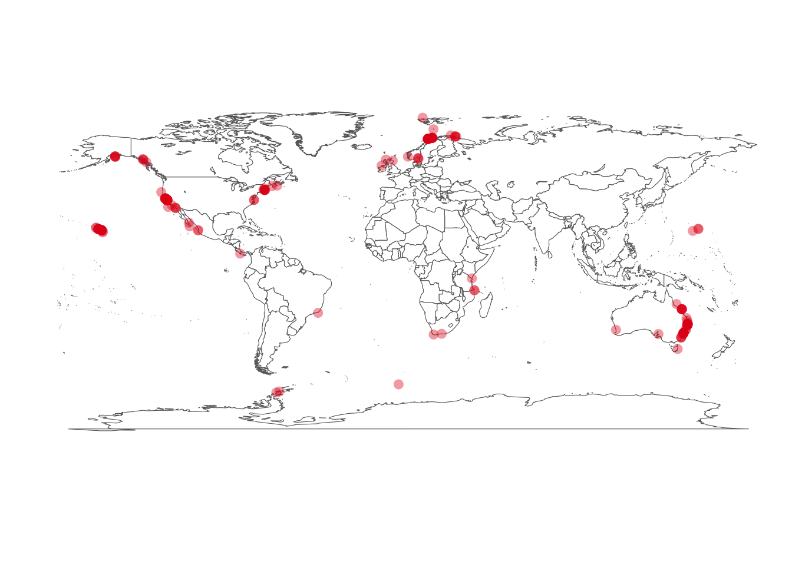

Programming in ArcGIS
Ben Best, Jim Frew
October 3, 2014
Git, Github
Markdown
- https://guides.github.com/features/mastering-markdown/
- cheatsheet
- https://stackedit.io for side by side
Trying out http://www.emoji-cheat-sheet.com :zap:. Or https://octicons.github.com (see usage)?
Programming with Python
https://github.com/ipython/ipython/wiki/A-gallery-of-interesting-IPython-Notebooks - the mother load of scientific python computing
- http://www.software-carpentry.org/v5/novice/python/index.html
Setup: - http://software-carpentry.org/v5/setup.html - https://github.com/swcarpentry/windows-installer
Something Familiar
- Lab 3: Siting Wind Energy
Detailed Wind Analysis
50-Meter Resolution (50-meter height above surface)
These datasets are geographic shapefiles generated from the original raster data. The original raster data varied in resolution from 200-meter to 1000-meter cell sizes. The data provide an estimate of annual average wind resource for specific states or regions. The data are separated into two distinct groups: NREL produced, and AWS Truepower produced/NREL validated. To learn more, please see Wind Data Details.
The NREL-produced map data only applies to areas of low surface roughness (i.e. grassy plains), and excludes areas with slopes greater than 20%. For areas of high surface roughness (i.e. forests), the values shown may need to be reduced by one or more power classes. The TrueWind-produced resource estimates factor in surface roughness in their calculations, and do not exclude areas with slopes greater than 20%.
Data: California Wind 50m Resolution (California_50m_wind.zip) 05/18/2012 ca_50m_metadata.htm CA 50m.kmz
NOAA NCDC
Links:
U.S. Wind Climatology
To calculate: - monthly mean wind speed (\(s\)) from x (\(u\)) and y (\(v\)) components use Pythagorean theorem:
\[ s = \sqrt{u^2 + v^2} \]
- monthly variance in wind angle
- Displaying Speed and Direction Symbology from U and V vectors | ArcGIS Blog
Could form criteria of thresholds.

ArcPy
.py Python script extension
arcpy Python module with ArcGIS functionality
Other Python Skills
- http://ipython.org/ipython-doc/stable/interactive/tutorial.html
- http://pandas.pydata.org
- scientific python tutorial
- Course: Marine GIS Applications (ArcGIS) (2012)
- ArcGIS Tutorial » Marine Geospatial Ecology Tools
- ArcLessons - EdCommunity - Esri GIS
- Channel: Tutorials | ArcGIS Video
- Tutorials | ArcGIS Resources
books:
training: - Esri Training | Python for Everyone - Esri Training | Using Python in ArcGIS Desktop 10 - Esri Training | Creating Python Toolboxes Using ArcGIS 10.1
resources: - http://arcpy.wordpress.com/
Final Project: Species - rgbif
# install.packages(c('rgdal','rgeos'), repos='http://www.stats.ox.ac.uk/pub/RWin')
# devtools::install_github('ropensci/rgbif')suppressPackageStartupMessages(library(rgbif))
key = name_lookup(query='Humpback whale', rank='species')$data$nubKey[1] # 5220086
dat = occ_search(taxonKey=key, return='data', limit=200)
gbifmap(input=dat)## Rendering map...plotting 192 points
See: rgbif tutorial
Final Project: Species - env data
raster::getData - get geographic data for anywhere in the world
‘alt’ stands for altitude (elevation); the data were aggregated from SRTM 90 m resolution data between -60 and 60 latitude. ‘GADM’ is a database of global administrative boundaries. ‘worldclim’ is a database of global interpolated climate data. ‘SRTM’ refers to the hole-filled CGIAR-SRTM (90 m resolution). ‘countries’ has polygons for all countries at a higher resolution than the ‘wrld_simpl’ data in the maptools pacakge .
Terrestrial:
Marine:
Either:
- http://topex.ucsd.edu/WWW_html/srtm30_plus.html
- http://nationalmap.gov/viewer.html
- http://www.cirgis.org/data.html ## Final Project: Ecosystem
InVEST documentation, which one?:
Rec’d Reading:
- Guerry, A. D., Ruckelshaus, M. H., Arkema, K. K., Bernhardt, J. R., Guannel, G., Kim, C.-K., … Spencer, J. (2012). Modeling benefits from nature: using ecosystem services to inform coastal and marine spatial planning. International Journal of Biodiversity Science, Ecosystem Services & Management, 1–15. doi:10.1080/21513732.2011.647835
OLD…
Not using.
windng
This windng notebook shows some of the features of windng:
- Loading wind data files into pandas DataFrame.
- Monthly means.
- Selection of a reference period.
- Long term analysis.
- Speed and direction distribution.
- Turbulence intensity calculations.
- Nicely plotting all that stuff.
Install windml
The windML framework provides an easy-to-use access to wind data sources within the Python world, building upon numpy, scipy, sklearn, and matplotlib. As a machine learning module, it provides versatile tools for various learning tasks like time-series prediction, classification, clustering, dimensionality reduction, and related tasks.
For windml, need also: scikit-learn, numpy, scipy
# change to home dir, make github dir, change there
cd ~; mkdir github; cd github
# install dependancies
pip install -U numpy scipy scikit-learn
# add windml
git clone https://github.com/cigroup-ol/windml.git
export PYTHONPATH=$PYTHONPATH:~/github/windmlBrief Example
from windml.datasets.nrel import NREL
from windml.mapping.power_mapping import PowerMapping
from sklearn.neighbors import KNeighborsRegressor
import math
windpark = NREL().get_windpark(NREL.park_id['tehachapi'], 3, 2004)
target = windpark.get_target()
feature_window, horizon = 3, 3
mapping = PowerMapping()
X = mapping.get_features_park(windpark, feature_window, horizon)
Y = mapping.get_labels_turbine(target, feature_window, horizon)
reg = KNeighborsRegressor(10, 'uniform')
train_to, test_to = int(math.floor(len(X) * 0.5)), len(X)
train_step, test_step = 5, 5
reg = reg.fit(X[0:train_to:train_step], Y[0:train_to:train_step])
y_hat = reg.predict(X[train_to:test_to:test_step])
notes from bbest_test@frew-test…
git bash
Setup name and password
git config --global user.name "Ben Best"
git config --global user.email bbest@nceas.ucsb.educopy / paste in bash window
To paste, right click on top bar of window > Edit > Paste.
To copy,
clone [esm296-4f]
setup rstudio [esm296-4f]
Tools > Global Options…
Git/SVN > Git executable:
C:/Program Files (x86)/Git/bin/git.exe- R General
- untick: Restore .Rdata into workspace at startup
- Save workspace to .RData on exit: Never
File > New Project… Version Control > Git >
file srxr
- H:/
- R/
- github/
- esm296-4f/ course repo
- courses/ personal repo
- esm296-4f/
- esm296-4f/ workspace, especially for big data files
github setup
- invite profs: bbest, frew, lwedding?
- create an issue
git setup
[master 0c8e9e3] adding R setup Committer: unknown bbest_student@frew-test.esm.ucsb.edu Your name and email address were configured automatically based on your username and hostname. Please check that they are accurate. You can suppress this message by setting them explicitly:
After doing this, you may fix the identity used for this commit with:
git commit --amend --reset-author1 file changed, 17 insertions(+) create mode 100644 wk01_programming/setup_r.R
Week 2
Finding out packages
Other
other rec’d software
- MGET 64-bit
- Notepad ++
MGET readings
- Roberts et al